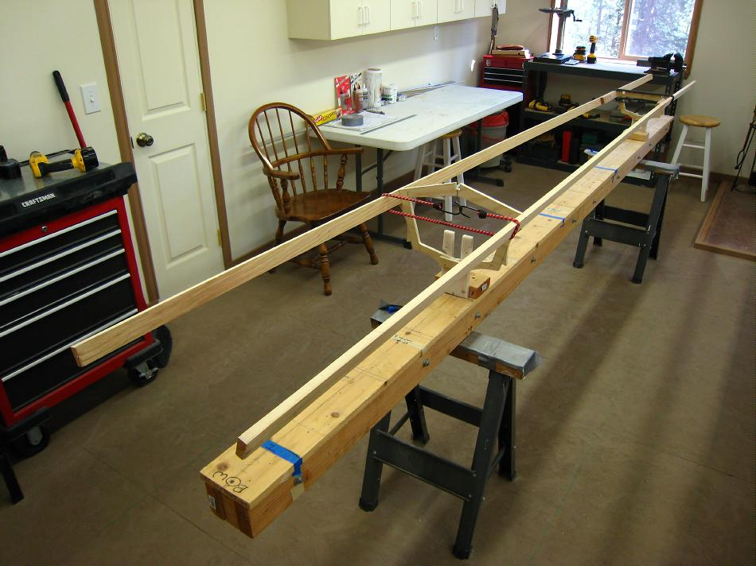

| Attaching Stringers | Menu Previous Page Next Page |
|

Stringers are first attached to the cross sections with shock cords and tape. This allows proper alignment prior to gluing, pegging, and / or lashing. The 14' gunwales of the Sea Bee above are first attached with shock cords to cross sections 1 and 4.
|
|